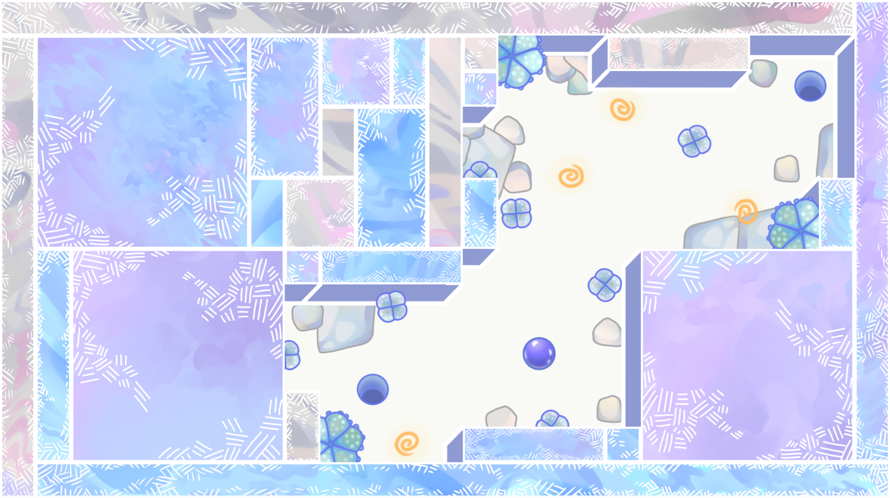

Secret Maze is an ambient
exploration game with tilt controls.
Explore interconnected mazes,
collects hidden souvenirs in
a calm generated environment.
Do you want to know a secret?
Promise to not tell anyone about it.
Okay, have you seen a marble maze?
There’s a lot of old ones out there.
I can tell you this:
There are secrets inside of them!
A connection to the Secret Maze…
Relaxing…
The mazes you find there are so relaxing,
they are calm... simply peaceful.
A garden with cactus
and glowing stones.
A bathhouse of wood,
tiles and floating lime.
A sunlit meadow with
flowers and the
sound of the wind.
It's like a personal garden you can
carry around in your pocket!
Secrets...
You're lucky that you got to know
how to enter the secret maze.
I can tell you one thing:
there are secrets inside of the secrets.

There are too many secrets to
tell you about every single one
of them, but remember these three hints:
- Watch the flowers,
- Follow the footsteps and
- Touch the rune signs.
Revisits…
So you have visited some of the mazes,
looked in every corner for secrets
and decided that there is nothing there.
Wrong! Look again!
The maze is changing.
Some mazes might look the same
but there’s a new trail of breadcrumbs
leading to a different path or shortcut.
Some changes are when there's
different weather and seasons.
How do you enter?
Well, I have heard that the portal
to the maze has been weak lately,
check again after the summer,
and I’m sure the connection is strong
enough for humans to enter with phones.
SecretMazeGame@gamil.com